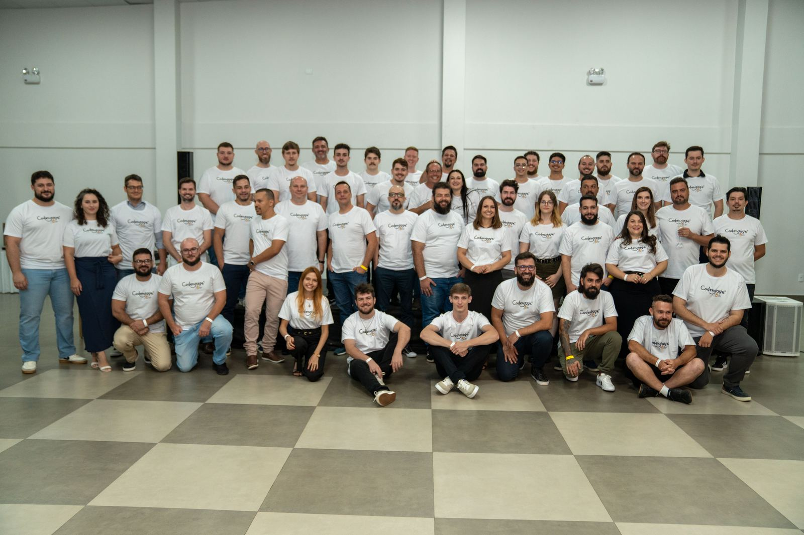
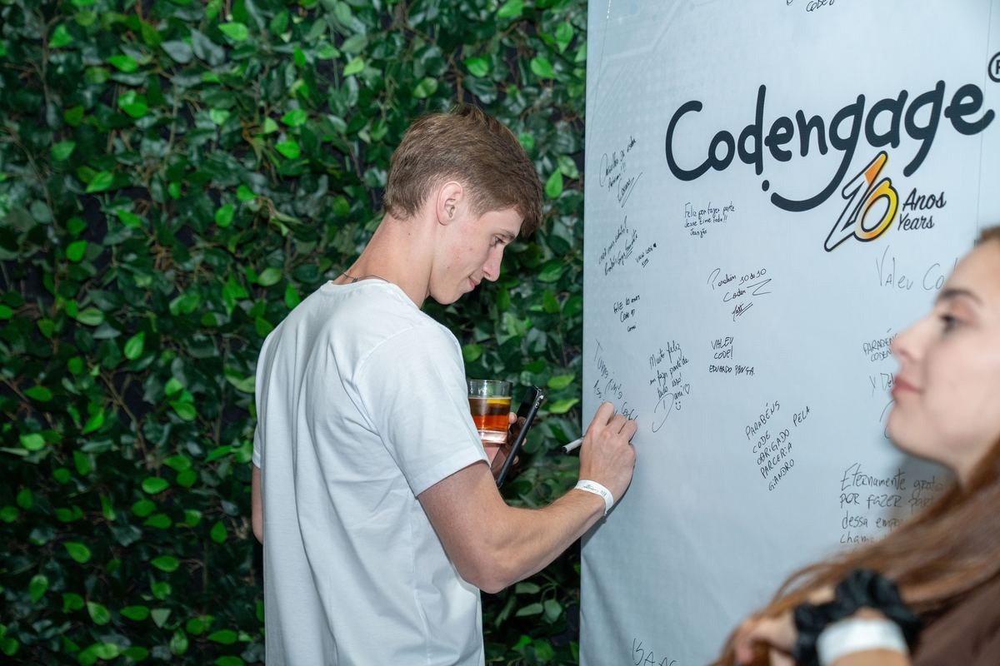

Codengage — Desenvolvedor
Desenvolvimento e manutenção de componentes reutilizáveis (gem CodengageViewComponents), padrões de UI e qualidade com testes e lint. Visão de produto e time — fotos do time.
Portfólio dev — UTFPR · Codengage
Desenvolvedor full-stack: Ruby on Rails, Java/Spring, Next.js/React e Python/IA. Do componente reutilizável ao SaaS em produção com pagamento e WhatsApp.

Sou estudante de Programação para Web (UTFPR) e trabalho como dev na Codengage. No dia a dia atuo no ecossistema supercota (Rails + IA), e nos projetos próprios vou de Java/Spring a Next.js — sempre versionado no Git e publicado na web.
Desenvolvimento e manutenção de componentes reutilizáveis (gem CodengageViewComponents), padrões de UI e qualidade com testes e lint. Visão de produto e time — fotos do time.
Alto nível: gestão de cotações com cache/filas/websockets (Solid Stack), deploy com Kamal + Docker, CI no GitHub Actions, throttling e system tests. Sem código ou dados internos aqui — só a stack pública.
Alto nível: serviços de IA para cotações (busca, embeddings, filas com Celery/Redis). Integração com o Rails via APIs.
Multi-tenant por slug, pagamento com webhook robusto, WhatsApp multi-provedor sem vendor lock-in, Web Push VAPID, JWT em HttpOnly cookie. Validado em produção com barbearias reais. Repositório privado — demo sob pedido.
Plataforma em evolução com backend, frontend e app desktop orquestrados via compose. Repositório privado — detalhes sob pedido.
Automatiza trabalhos do Moodle: lê assignments, gera conteúdo com IA, formata e submete. Open source.
Conversor BRL ⇄ USD/EUR/BTC com cotação viva oficial (Banco Central + CoinGecko, sem chave). Projeto da disciplina Web 1 — 100% front estático no GitHub Pages.
Evento de março/2026. Fotos otimizadas para web a partir dos originais de ~5 MB.


Bora conversar sobre Rails, Spring, Next ou IA aplicada?